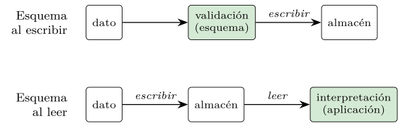
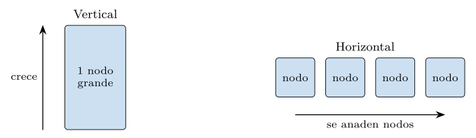
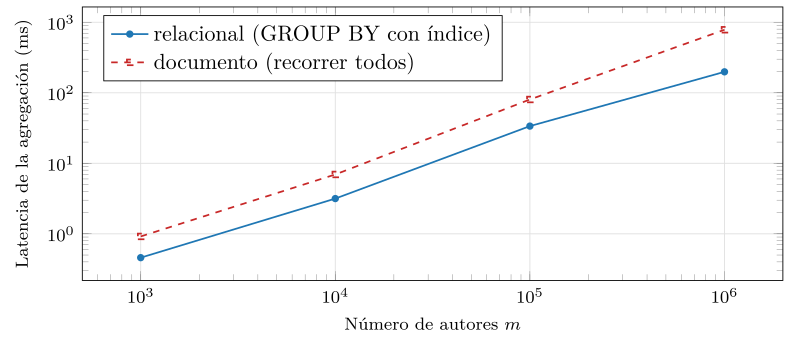

Capítulo 6. Límites del relacional y el movimiento NoSQL
La primera parte terminó en lo más alto del rigor: las garantías ACID, que prometen que un conjunto de cambios ocurre por completo o no ocurre y que, una vez confirmado, sobrevive a cualquier fallo. Esa promesa descansaba, sin decirlo, en un supuesto: que existe un único nodo, una única copia coherente de la verdad sobre la que las garantías se definen. Este capítulo abre la segunda parte poniendo a prueba ese supuesto. Cuando los datos dejan de caber en una máquina, cuando su forma deja de ser estable y cuando el servicio no puede pararse, el edificio relacional empieza a crujir, y de ese crujido nació, a finales de los años dos mil, el movimiento que se llamó NoSQL.
Conviene fijar desde el principio la actitud con la que este libro lo aborda. NoSQL no es el sucesor del modelo relacional, ni su superación, ni su enemigo. Es una respuesta a un conjunto distinto de restricciones: las de la escala web, donde ciertos sistemas necesitan repartir billones de registros entre miles de máquinas y seguir respondiendo aunque algunas fallen. Para esas restricciones, las garantías fuertes del capítulo 5 son a veces un lujo inasumible, y NoSQL las relaja a cambio de escala y disponibilidad. Para otras —la mayoría de las aplicaciones, de hecho— el relacional sigue siendo la mejor opción. Leer NoSQL como «lo que vino después de SQL» es el error que este capítulo previene; leerlo como «lo que se hace cuando el relacional no escala» es entenderlo.
El recorrido tiene tres movimientos, que son las tres presiones que originaron el fenómeno. La primera es la presión de la escala: volúmenes y ritmos que un solo nodo no aguanta. La segunda es la presión de la forma: datos cuya estructura cambia o varía de un registro a otro, mal servidos por el esquema fijo. La tercera es la presión del crecimiento: la necesidad de escalar añadiendo máquinas en lugar de agrandar una, que el relacional resiste mal y que NoSQL abraza por diseño. El capítulo cierra situando ambos mundos como complementarios —la idea de la persistencia políglota que la quinta parte desarrollará— y tendiendo el puente al capítulo 7: relajar el esquema obliga a relajar también la consistencia, y eso exige un marco teórico propio.
La presión de la escala web
Durante tres décadas, el modelo relacional fue la respuesta por defecto a casi cualquier problema de datos, y con razón: ofrecía un modelo claro, un lenguaje declarativo y garantías fuertes. El supuesto implícito era que la base cabía en una máquina, quizá grande, pero una. A comienzos del siglo, un puñado de empresas —buscadores, redes sociales, comercios electrónicos globales— rompió ese supuesto. Sus datos se medían en petabytes, sus usuarios en cientos de millones, y su servicio no podía permitirse una parada. Ninguna máquina, por grande que fuera, bastaba.
La presión tenía varias caras, que la literatura resumió a veces con las «uves». El volumen: más datos de los que caben en el disco de un nodo, y de los que una sola CPU puede recorrer en un tiempo razonable. La velocidad: ritmos de escritura —clics, sensores, mensajes— que saturan la capacidad de ingestión de un gestor centralizado. Y la variedad: datos heterogéneos —perfiles, registros de actividad, documentos— cuya forma no encaja limpiamente en filas y columnas. A ellas se sumaba una exigencia transversal, la disponibilidad: para un comercio global, cada minuto de parada cuesta ventas, de modo que el sistema debe seguir sirviendo aunque una máquina, un disco o un centro de datos entero falle. La tabla siguiente resume las cuatro presiones y el rasgo del relacional al que cada una aprieta.
| Presión | Qué desborda | Rasgo relacional que aprieta |
|---|---|---|
| Volumen | el disco de un nodo | la reunión y el barrido locales |
| Velocidad | la ingestión central | la escritura serializada por el log |
| Variedad | el esquema fijo | la validación al escribir |
| Disponibilidad | el punto único de fallo | la copia única y coherente |
Ninguna de las cuatro es nueva en sí; lo nuevo fue su coincidencia y su magnitud, que empujaron a abandonar el nodo único sobre el que descansaba todo lo de la primera parte.
Observación. Ninguna de estas presiones es un defecto del modelo relacional como modelo. El álgebra de Codd no impide repartir los datos; lo que se resiste a repartirse son las garantías que los gestores relacionales construyeron sobre él —la reunión eficiente, la transacción ACID, la integridad referencial—, todas las cuales suponen un acceso barato a todo el conjunto de datos. Cuando ese conjunto se desparrama por mil máquinas, una reunión entre dos tablas que viven en nodos distintos, o una transacción que toca filas repartidas, deja de ser barata. NoSQL no ataca el modelo relacional: renuncia a las garantías que no escalan.
La respuesta industrial llegó de quienes sufrían el problema. Google describió Bigtable (Chang et al. 2008), un almacén distribuido de datos estructurados que abandonaba el modelo relacional para repartirse por miles de máquinas; Amazon publicó Dynamo (DeCandia et al. 2007), un almacén de clave-valor que sacrificaba la consistencia fuerte para no dejar de estar disponible nunca. Estos dos artículos —uno priorizando la partición, otro la disponibilidad— fueron las semillas de buena parte de los sistemas NoSQL que vinieron después, y fijaron el patrón: ante la escala, se abandona algo del relacional a cambio de poder repartir y de seguir vivo.
Una breve genealogía
Conviene situar el fenómeno en el tiempo, porque su nombre engaña. El término NoSQL se popularizó hacia 2009, como etiqueta de un encuentro de proyectos que compartían el rechazo al modelo relacional para ciertas cargas; pronto se reinterpretó, con más acierto, como not only SQL —«no solo SQL»—, que captura mejor la idea de coexistencia que este capítulo defiende. La etiqueta agrupó sistemas muy distintos entre sí, unidos no por una tecnología común sino por una renuncia común: la del esquema fijo, la de las garantías fuertes, o la de ambas.
Su linaje se traza con claridad desde los dos artículos fundacionales. De Bigtable (Chang et al. 2008) desciende una familia de almacenes de columna ancha, repartidos por clave, entre ellos el proyecto abierto HBase y, con variaciones, Cassandra. De Dynamo (DeCandia et al. 2007) desciende la estirpe de los almacenes clave-valor de alta disponibilidad, como Riak y de nuevo, en su modelo de réplica, Cassandra. En paralelo, y empujados más por el desajuste de impedancia que por la escala extrema, nacieron los almacenes documentales —MongoDB el más extendido—, que llevaron la idea del documento JSON al centro del modelo de datos. Y, algo aparte, las bases de grafos —Neo4j— atacaron un problema que el relacional sirve mal: las consultas sobre relaciones muy conectadas, que en SQL degeneran en cadenas de reuniones. El capítulo 8 recorrerá estas familias una a una; aquí basta ver que no son un bloque, sino un abanico de respuestas a presiones distintas. La siguiente línea de tiempo ordena los hitos.
| Año | Hito | Aportación |
|---|---|---|
| 2006 | Bigtable (Google) | almacén de columna ancha, repartido por clave |
| 2007 | Dynamo (Amazon) | clave-valor disponible, consistencia relajada |
| 2009 | el término «NoSQL» | etiqueta del movimiento; luego «not only SQL» |
| 2009 | MongoDB | el documento JSON en el centro del modelo |
La distancia entre 2006 y 2009 es corta, y no es casual: respondía a una presión que varias empresas sintieron a la vez, y a la que cada una respondió a su manera.
El desajuste de impedancia
Hay una segunda raíz, más antigua y menos espectacular que la escala, y conviene no olvidarla: el desajuste de impedancia entre el modelo relacional y los objetos de los lenguajes de programación. Una aplicación maneja objetos —un pedido con sus líneas, un usuario con sus direcciones— que son estructuras anidadas; el modelo relacional los descompone, por normalización, en varias tablas planas que hay que reunir cada vez que se reconstruye el objeto. Ese ir y venir entre el objeto anidado y las tablas planas es trabajo constante, y fue una fuente perenne de fricción en el desarrollo. El listado 6.1 lo hace visible: un objeto que en el lenguaje es uno solo, anidado, se descompone para guardarlo en dos tablas y se recompone, con una reunión, para volver a leerlo.
# en el lenguaje, un objeto anidado
pedido = {"id": 10, "fecha": "2026-01-01",
"lineas": [{"producto": "A", "cant": 2},
{"producto": "B", "cant": 1}]}
# para guardarlo en relacional hay que aplanarlo en dos tablas
# pedido(id, fecha) <- una fila
# linea(id, id_pedido, ...) <- una fila por linea
# y para leerlo de nuevo, reunirlas:
# SELECT ... FROM pedido JOIN linea ON linea.id_pedido = pedido.idListado 6.1. El desajuste de impedancia: un objeto anidado se parte en dos tablas al guardar y se reune al leer.
La idea de guardar el objeto tal cual, anidado, en un documento, resolvía esa fricción de un plumazo, y fue tan atractiva como la propia escala: el documento de la base se parece al objeto del lenguaje, y desaparecen el aplanar y el reunir.
Así, dos presiones distintas —la escala de unos pocos gigantes y el desajuste de impedancia de todos los demás— empujaban en la misma dirección: aflojar la rigidez del esquema fijo y la atomización en tablas. El resto del capítulo examina qué se afloja exactamente y qué se gana y se pierde al hacerlo.
Esquema flexible frente a esquema fijo
La primera rigidez que NoSQL afloja es la del esquema. En el modelo relacional, el esquema es obligatorio y previo: antes de insertar una sola fila hay que declarar las tablas, sus columnas y sus tipos, y toda fila que se inserte después se valida contra esa declaración. Es lo que se llama esquema al escribir (schema-on-write): la base comprueba la forma del dato en el momento de guardarlo, y rechaza lo que no encaja. La alternativa documental invierte el momento de la comprobación: la base guarda lo que le llega, con la forma que tenga, y es la aplicación quien interpreta esa forma al leerlo. Es el esquema al leer (schema-on-read). La figura 6.1 contrapone los dos momentos.

El mismo dominio, en dos formas
Nada aclara la diferencia como ver el mismo dominio modelado de las dos maneras. Tómese un autor con sus libros, el ejemplo que recorre todo el libro. En el modelo relacional normalizado del capítulo 4, vive en dos tablas que se reúnen por una clave ajena (listado 6.2): el autor una vez, cada libro una vez, y la relación entre ellos expresada por id_autor.
CREATE TABLE autor (
id integer PRIMARY KEY,
nombre text,
pais text
);
CREATE TABLE libro (
id integer PRIMARY KEY,
titulo text,
id_autor integer REFERENCES autor(id)
);Listado 6.2. El dominio en relacional normalizado: dos tablas que se reúnen por una clave ajena.
En el modelo documental, el mismo dominio es un único documento por autor que lleva sus libros embebidos dentro, como una lista anidada (listado 6.3). No hay dos tablas ni clave ajena: el agregado «autor con sus libros» se guarda y se recupera como una sola cosa.
{
"_id": 1,
"nombre": "autor-1",
"pais": "es",
"libros": [
{ "id": 0, "titulo": "obra 0000" },
{ "id": 1, "titulo": "obra 0001" }
]
}Listado 6.3. El mismo dominio como documento embebido: un agregado que se guarda y se lee de una pieza.
La consulta «dame el autor 1 con todos sus libros» también se ve distinta en cada modelo (listado 6.4). En relacional es una reunión; en documental, la lectura de un documento por su identificador. La segunda no reúne nada, porque lo que en relacional estaba repartido en dos tablas, en el documento ya está junto.
-- relacional: reunir las dos tablas
SELECT a.nombre, l.titulo
FROM autor a JOIN libro l ON l.id_autor = a.id
WHERE a.id = 1;
-- documental (estilo MongoDB): traer el documento entero
db.autor.find({ "_id": 1 })Listado 6.4. La misma consulta lógica: reunión en relacional, lectura directa en documental.
Operar sobre documentos
La lectura por identificador es solo una de las operaciones; conviene ver cómo se escribe y se consulta un almacén documental para captar en qué se parece y en qué se aparta de SQL. El listado 6.5 reúne, en el estilo de MongoDB, las operaciones habituales: insertar un documento, consultar por un campo embebido, proyectar solo parte del documento y actualizar un campo anidado.
// insertar un documento nuevo (sin declarar esquema previo)
db.autor.insertOne({ _id: 2, nombre: "autor-2", pais: "us",
libros: [{ id: 0, titulo: "obra 0000" }] })
// consultar por un campo embebido: autores con algun libro asi
db.autor.find({ "libros.titulo": "obra 0000" })
// proyectar: traer solo el nombre, sin los libros
db.autor.find({ _id: 1 }, { nombre: 1 })
// actualizar un campo anidado: anadir un libro al autor 1
db.autor.updateOne({ _id: 1 },
{ $push: { libros: { id: 9, titulo: "obra 0009" } } })Listado 6.5. Operaciones documentales al estilo MongoDB: insertar, consultar por campo embebido, proyectar y actualizar.
Dos rasgos saltan a la vista. El primero es que la consulta puede descender a la estructura anidada —"libros.titulo" navega dentro de la lista embebida—, algo que en relacional exigiría reunir la tabla de libros. El segundo es que no hay JOIN: cada consulta opera sobre una colección de documentos, y combinar varias colecciones, cuando hace falta, recae en la aplicación o en operadores especiales más costosos. La interfaz es más imperativa y menos declarativa que SQL: se gana en encaje con el objeto anidado, se pierde el álgebra uniforme que el capítulo 3 celebraba. Donde SQL ofrecía un único lenguaje para preguntar cualquier cosa, el almacén documental ofrece accesos rápidos a lo que está dentro del agregado y deja fuera, deliberadamente, lo que lo cruza.
Qué se gana y qué se pierde con el modelo documental
La forma documental ofrece tres ventajas claras. La primera es la localidad: todo lo que la aplicación necesita junto está, físicamente, junto; leer el agregado es una sola operación, sin reuniones. La segunda es la agilidad: como no hay esquema previo que validar, añadir un campo a algunos documentos —un autor con seudónimo, otro sin él— no exige alterar ninguna tabla ni migrar las filas existentes. La tercera es el encaje con el objeto: el documento se parece al objeto de la aplicación, y desaparece el desajuste de impedancia de la sección anterior.
La agilidad se ve mejor comparando cómo evoluciona el esquema en cada modelo (listado 6.6). En relacional, añadir un campo es una orden ALTER TABLE que afecta a toda la tabla y que, sobre tablas grandes, puede ser una operación costosa y delicada. En documental, basta empezar a escribir documentos con el campo nuevo: los antiguos siguen sin él, y es el código quien, al leer, asume su ausencia. La misma flexibilidad que ahorra la migración es la que traslada al código la carga de tolerar documentos de formas distintas conviviendo en la misma colección.
-- relacional: alterar la tabla entera
ALTER TABLE autor ADD COLUMN seudonimo text;
// documental: simplemente escribir el campo en los nuevos
db.autor.insertOne({ _id: 3, nombre: "autor-3",
seudonimo: "el anonimo", pais: "fr" })
// los documentos antiguos no tienen 'seudonimo'; el codigo lo asumeListado 6.6. Evolucion del esquema: una migracion en relacional, ninguna en documental (la asume el codigo al leer).
Esas ventajas se pagan, y conviene ser honesto sobre el precio. Lo primero que se pierde es la validación automática: si no hay esquema previo, nada impide guardar un documento con el país escrito de tres formas distintas, o sin el campo nombre; la coherencia de la forma deja de garantizarla la base y pasa a ser responsabilidad del código, donde es más fácil que se escape. Lo segundo es la integridad referencial: el modelo relacional impide que un libro apunte a un autor que no existe; el documento embebido no tiene ese problema porque no hay referencia, pero en cuanto un dato se referencia entre documentos —un libro que cita a otro— nada garantiza que el referido exista. Y lo tercero es la duplicación: si el país del autor se embebe en cada uno de sus documentos de libro (en un modelo documental distinto al de arriba), cambiarlo obliga a tocar muchos documentos, que es exactamente la anomalía de actualización del capítulo 4, ahora sin una norma que avise. Conviene enumerar los costes ocultos, porque no aparecen el primer día sino cuando el sistema crece.
- Validación diferida.
-
El error de forma no se detecta al escribir, sino al leer, a menudo en producción y lejos de su causa.
- Integridad en el código.
-
Lo que la clave ajena garantizaba —que el referido exista— pasa a depender de que el código no falle nunca.
- Duplicación.
-
Un dato compartido y embebido se repite, y actualizarlo es tocar muchas copias, con el riesgo de dejar unas al día y otras no.
- Esquema implícito.
-
La forma esperada vive dispersa en el código; dos versiones que discrepen producen documentos incompatibles sin que nada avise.
Ninguno es un argumento contra el modelo documental; son el precio que paga su agilidad, y conocerlos es lo que permite cobrarlo a sabiendas en lugar de descubrirlo por sorpresa.
Observación. «Esquema flexible» no significa «sin esquema». Todo dato que una aplicación lee tiene una forma que el código espera: campos con ciertos nombres, de ciertos tipos. La diferencia es dónde vive ese esquema. En el modelo relacional vive en la base, declarado y validado por ella; en el documental vive en el código que lee los documentos, implícito y disperso. El esquema no desaparece: se muda de la base a la aplicación, y con él se muda la responsabilidad de hacerlo cumplir. Quien crea que NoSQL «no tiene esquema» descubrirá el suyo —a su pesar— el día que dos versiones del código discrepen sobre la forma de un documento.
Embeber, referenciar e indexar
Embeber o referenciar
La decisión central al modelar con documentos no es la de antes —documento frente a tabla— sino una interna: cuando un dato se relaciona con otro, ¿se embebe dentro del documento o se referencia por su identificador, como una clave ajena? Las dos opciones reproducen, dentro del mundo documental, la tensión entre localidad y redundancia que la normalización del capítulo 4 estudió. Embeber pone el dato relacionado dentro (listado 6.7, arriba): leer el todo es una operación, y no hay reunión, pero el dato embebido se duplica si aparece en varios documentos y se desactualiza si se copia mal. Referenciar guarda solo el identificador del dato relacionado (listado 6.7, abajo): no hay duplicación, pero reconstruir el todo exige una segunda consulta que la base no resuelve por sí sola.
// embeber: el editor va dentro de cada libro (lectura de una pieza)
{ "_id": 1, "titulo": "obra 0001",
"editor": { "id": 7, "nombre": "editorial-7", "pais": "es" } }
// referenciar: el libro solo guarda el id del editor (sin duplicar)
{ "_id": 1, "titulo": "obra 0001", "editor_id": 7 }
// ...y el editor vive una vez en su propia coleccion
{ "_id": 7, "nombre": "editorial-7", "pais": "es" }Listado 6.7. Embeber el dato relacionado dentro del documento, o referenciarlo por su identificador.
La regla práctica recoge lo aprendido en el capítulo 4 y lo adapta a la orientación al agregado. Se embebe cuando el dato relacionado pertenece al agregado y se lee siempre con él —las líneas de un pedido, que no tienen vida fuera de su pedido— y cuando la relación es de pocos elementos y cambia poco. Se referencia cuando el dato relacionado tiene vida propia y se comparte entre muchos agregados —un editor que publica miles de libros, al que no tiene sentido copiar en cada uno— o cuando embeberlo haría el documento desmesurado. El criterio último es el mismo de toda la sección: que la unidad que se lee junta sea la que se guarda junta, y que lo compartido y cambiante viva una sola vez. Embeber sin criterio reintroduce las anomalías de actualización del capítulo 4; referenciar sin criterio reintroduce las reuniones que el modelo documental quería evitar.
Índices y su precio
Que no haya esquema previo no significa que no haya índices; al contrario, sin ellos toda consulta que no sea por el identificador degeneraría en un barrido de toda la colección, igual que en el relacional sin índice del capítulo 3. Los almacenes documentales ofrecen, por eso, una familia de índices rica, y conviene conocerla porque su existencia matiza varias afirmaciones anteriores. Se puede indexar un campo de primer nivel, un campo embebido a cualquier profundidad, y —rasgo propio del modelo— los elementos de una lista anidada, mediante un índice multiclave que crea una entrada por elemento (listado 6.8).
// campo de primer nivel
db.autor.createIndex({ pais: 1 })
// campo embebido, a cualquier profundidad
db.autor.createIndex({ "editor.pais": 1 })
// multiclave: una entrada por elemento de la lista 'libros'
db.autor.createIndex({ "libros.titulo": 1 })
// compuesto: por pais y, dentro de cada pais, por nombre
db.autor.createIndex({ pais: 1, nombre: 1 })Listado 6.8. Indices en un almacen documental: de primer nivel, sobre campo embebido, multiclave sobre una lista y compuesto.
El índice multiclave es el que permite que la consulta por campo embebido de la sección 6.3 —"libros.titulo"— sea eficiente en lugar de un barrido: sin él, encontrar los autores con cierto libro obligaría a recorrer todos los documentos y abrir sus listas. Con él, la consulta salta directamente a los pocos documentos relevantes, exactamente como un índice relacional salta a las pocas filas buscadas.
Pero el índice se paga, y el precio es el mismo que en el relacional, solo que aquí más visible. Cada índice consume espacio y, sobre todo, ralentiza las escrituras: insertar o modificar un documento obliga a actualizar todos sus índices, y un índice multiclave sobre una lista de mil elementos crea mil entradas que mantener. En un modelo orientado a la escritura masiva —que era una de las presiones de la sección 6.1—, multiplicar los índices puede anular la ventaja que se buscaba. El consejo, idéntico al del capítulo 3, es indexar lo que se consulta de verdad y nada más: cada índice acelera unas consultas y frena todas las escrituras, y el equilibrio depende, una vez más, de la carga.
Observación. Aquí reaparece, intacta, una lección de la primera parte. El índice no es un truco exclusivo del relacional: es una estructura que cambia el coste de buscar a cambio de encarecer el escribir, y vive igual en un almacén documental. Cuando, en la cuarta parte, aparezcan los índices vectoriales —que aceleran la búsqueda por similitud a cambio de espacio y de un coste de construcción—, serán otra encarnación de la misma idea. Quien entendió el índice B-árbol del capítulo 3 tiene ya media comprensión del índice de vectores que vendrá; cambia qué se busca —el valor exacto por la cercanía—, pero no la economía del índice.
El modelo orientado a agregados
Hay una idea que ordena todo lo anterior: la de agregado. Un agregado es un grupo de datos que se trata como una unidad —el autor con sus libros, el pedido con sus líneas, el perfil con sus preferencias—, y que tiene sentido leer y escribir junto. El modelo relacional es indiferente al agregado: descompone todo en relaciones planas y deja que cada consulta recomponga lo que necesite, lo cual es flexible pero cuesta reuniones. Los almacenes documentales y de clave-valor son orientados al agregado: eligen una unidad —el documento— y la guardan, recuperan y reparten como un todo.
Esa elección tiene una consecuencia profunda para la escala, y es la bisagra con la sección siguiente. Si el agregado es la unidad, entonces es también la unidad de distribución: cada documento puede vivir entero en un nodo, y repartir la base entre máquinas se reduce a repartir documentos, sin que una operación sobre un agregado tenga que cruzar la red. El precio es la otra cara de la misma moneda: lo que no cabe dentro de un agregado —una consulta que cruza muchos— se vuelve caro, porque ya no hay reunión barata que lo recomponga. El modelo orientado a agregados, en suma, apuesta por que las operaciones frecuentes caben dentro de un agregado, y paga las que no.
Hay una segunda consecuencia, transaccional, que enlaza directamente con el capítulo 5 y anticipa el 7. En los almacenes orientados a agregados, la frontera de la atomicidad es el agregado: una escritura sobre un único documento es atómica —ocurre entera o no ocurre—, pero una operación que toque varios documentos, o varias colecciones, por lo general no lo es (listado 6.9). Lo que el capítulo 5 daba por sentado —una transacción que abarca cuanto haga falta— se restringe aquí a lo que cabe dentro de un agregado. No es un descuido, sino la otra cara de la moneda de la distribución: garantizar atomicidad sobre un solo documento, que vive en un solo nodo, es barato; garantizarla sobre documentos repartidos exigiría la confirmación distribuida que la sección 6.7 señaló como cara y frágil.
// atomico: una sola escritura sobre un documento
db.cuenta.updateOne({ _id: 1 }, { $inc: { saldo: -100 } })
// NO atomico de por si: dos escrituras sobre documentos distintos
db.cuenta.updateOne({ _id: 1 }, { $inc: { saldo: -100 } })
db.cuenta.updateOne({ _id: 2 }, { $inc: { saldo: +100 } })
// si el sistema cae entre ambas, el dinero se evaporaListado 6.9. La frontera de la atomicidad es el agregado: atomica dentro de un documento, no garantizada entre varios.
Por eso el consejo de modelado «lo que cambia junto, va junto» tiene, además del filo del rendimiento, un filo de corrección: si dos datos han de actualizarse de forma atómica, conviene que vivan en el mismo agregado, porque solo ahí la atomicidad está garantizada. Conviene matizar, no obstante, que con los años esa frontera se ha vuelto porosa: los principales almacenes documentales han incorporado transacciones ACID multidocumento —MongoDB las ofrece desde su versión 4.0 (2018) y las extendió a datos repartidos en la 4.2 (2019) (MongoDB, Inc. 2024)—, precisamente al precio de la coordinación distribuida que este capítulo describe como cara. La atomicidad de un solo documento sigue siendo lo barato y lo natural, y la multidocumento se paga, de modo que el consejo conserva su filo aunque la frontera ya no sea infranqueable. Esta restricción es la grieta por la que entrará el capítulo 7: al repartir y replicar los datos, no solo se complica la atomicidad, sino la propia noción de que todos los nodos vean el mismo valor a la vez, y de esa dificultad nacerá el teorema CAP.
Escalado vertical frente a horizontal
La tercera presión, y la decisiva para la escala web, es cómo se crece. Hay dos maneras de dar más capacidad a un sistema de datos (figura 6.2). Escalar en vertical (scale up) es agrandar la máquina: más CPU, más memoria, discos más rápidos. Escalar en horizontal (scale out) es añadir más máquinas y repartir entre ellas los datos y el trabajo. La diferencia parece de grado pero es de naturaleza, y explica buena parte del diseño de NoSQL.

El escalado vertical es cómodo: el sistema sigue siendo un único nodo, con su única copia coherente, y todo lo aprendido en la primera parte sigue valiendo sin cambios. Pero tiene dos límites duros. Uno es físico: hay un tamaño máximo de máquina, y acercarse a él es desproporcionadamente caro —doblar la potencia cuesta mucho más que el doble—. El otro es la disponibilidad: por grande que sea, una máquina es un único punto de fallo, y si cae, cae el servicio entero. El coste no lineal del escalado vertical es bien conocido: doblar la capacidad rara vez cuesta el doble, y acercarse al tope de gama encarece cada unidad de potencia más que la anterior, porque el hardware de gama alta se paga con una prima creciente.
El escalado horizontal invierte esa economía: como añade máquinas iguales y baratas, su coste crece de forma casi lineal con la capacidad, y por eso resulta más económico justo donde el vertical se dispara. El escalado horizontal no tiene techo de tamaño —siempre se puede añadir otra máquina— y tolera fallos —si una de mil cae, las otras siguen—, pero a cambio obliga a resolver dos problemas que el nodo único no tenía: cómo repartir los datos entre nodos y cómo coordinarlos para que el conjunto se comporte de forma sensata.
La clave de fragmentación
Repartir agregados entre nodos exige una decisión que vertebra todo el diseño: por qué valor se reparte, la clave de fragmentación (shard key). Cada agregado lleva una clave —el identificador del autor, del pedido, del usuario—, y una función decide, a partir de ella, en qué nodo vive. Hay dos estrategias básicas, que el capítulo 9 desarrollará y que aquí conviene nombrar. El reparto por rango asigna intervalos de clave a cada nodo —los identificadores del 1 al millón al nodo A, del millón al dos al nodo B—, lo que hace eficientes las consultas por rango pero arriesga puntos calientes si la carga se concentra en un intervalo. El reparto por hash aplica una función de dispersión a la clave y reparte por el resultado, lo que distribuye la carga de manera uniforme pero destruye la localidad de los rangos.
La elección de la clave no es inocua, y un error en ella es difícil de deshacer. Una clave mal elegida —una que concentre los accesos en pocos nodos, o que obligue a que una operación frecuente toque muchos— anula las ventajas del reparto y reintroduce, por la puerta de atrás, los costes de coordinación que se quería evitar. El principio de diseño es claro: la clave de fragmentación debe alinear el reparto físico con el patrón de acceso, de modo que cada operación frecuente caiga, en lo posible, dentro de un solo nodo. Es la misma lógica del agregado, llevada a la capa de distribución: que lo que se usa junto, viva junto.
El reparto por hash, en su forma más simple, asigna cada clave a un nodo según el resto de dividir su dispersión entre el número de nodos (listado 6.10). El ejemplo hace ver su virtud —claves vecinas acaban en nodos distintos, lo que reparte la carga— y su talón de Aquiles, que el capítulo 9 resolverá: si el número de nodos cambia, el resto cambia para casi todas las claves, y casi todo el dato ha de moverse. El hashing consistente de ese capítulo existe, precisamente, para que añadir un nodo mueva solo una fracción de los datos.
nodos = 4
for clave in [101, 102, 103, 104, 105]:
nodo = hash(clave) % nodos
print(clave, "->", nodo)
# claves vecinas caen en nodos distintos: la carga se reparteListado 6.10. Reparto por hash: a que nodo va cada clave. Cambiar el numero de nodos reubicaria casi todo (lo resuelve el cap. 9).
Por qué el relacional se resiste a repartirse
Aquí está el nudo del capítulo. Repartir una base relacional entre muchos nodos —fragmentarla o shardearla— choca de frente con dos de sus rasgos distintivos. El primero es la reunión: si las filas de dos tablas que hay que reunir viven en nodos distintos, la reunión deja de ser una operación local y se convierte en un trasiego de datos por la red, órdenes de magnitud más lenta. El segundo es la transacción ACID: una transacción que toca filas repartidas en varios nodos necesita un protocolo de confirmación distribuida —el two-phase commit que se asomó en el capítulo 5— que es lento y frágil ante fallos de red. Las dos joyas del relacional, la reunión eficiente y la transacción atómica, suponen proximidad, y la distribución la rompe. El listado 6.11 ilustra el primero de los costes: una reunión cuyas tablas viven en nodos distintos obliga a mover filas por la red antes de poder emparejarlas, y la red es órdenes de magnitud más lenta que la memoria o el disco local.
nodo A: autor (id, nombre, pais) <- mitad de los autores
nodo B: libro (id, titulo, id_autor) <- mitad de los libros
SELECT a.nombre, l.titulo
FROM autor a JOIN libro l ON l.id_autor = a.id;
-- para emparejar un autor de A con sus libros de B,
-- el motor ha de enviar filas de un nodo al otro por la red:
-- la reunion deja de ser local y se vuelve trafico de redListado 6.11. Una reunion distribuida: las filas a emparejar viven en nodos distintos y hay que moverlas por la red antes de reunir.
Los almacenes orientados a agregados sortean el problema porque renuncian, de entrada, a lo que lo causa. Si no se reúnen tablas —porque todo lo que va junto está embebido en un agregado— no hay reuniones distribuidas que pagar. Si no se ofrecen transacciones que crucen agregados —solo atomicidad dentro de uno— no hace falta confirmación distribuida. El agregado, elegido en la sección anterior como unidad de modelado, reaparece aquí como unidad de distribución: cada uno vive en un nodo, identificado por una clave que decide en cuál, y el sistema reparte la carga repartiendo agregados. La fragmentación, que en relacional es una cirugía dolorosa, en NoSQL es el modo de funcionamiento natural.
Observación. El escalado horizontal es la forma nativa de la nube. Añadir y quitar nodos según la carga —la elasticidad— solo tiene sentido si el sistema sabe repartirse entre un número variable de máquinas, y esa es justamente la capacidad que los almacenes orientados a agregados tienen y los relacionales clásicos no. La separación entre cómputo y almacenamiento que el capítulo 5 describió encaja aquí: si los datos viven en una capa de almacenamiento repartida y replicada, los nodos de cómputo pueden crecer y menguar sin mover datos. Por eso el auge de NoSQL y el de la nube son, en buena medida, el mismo fenómeno visto desde dos ángulos: ambos viven de poder crecer añadiendo máquinas en lugar de agrandar una.
La fragmentación abre, eso sí, los problemas que la coordinación entre nodos arrastra —cómo se decide qué nodo guarda qué, cómo se replica para tolerar fallos, qué pasa cuando la red se parte— y que los capítulos 7 y 9 desarrollan. Aquí basta retener la tensión: el relacional escala mal en horizontal porque sus garantías suponen proximidad; NoSQL escala bien porque renuncia a ellas. La pregunta no es cuál es mejor, sino qué se está dispuesto a pagar.
NoSQL no es el sucesor del relacional
Conviene volver, ya con los argumentos sobre la mesa, a la actitud anunciada al principio. Durante unos años, NoSQL se vendió con un entusiasmo que sugería el relevo del modelo relacional. La realidad, una década después, es más sobria y más interesante: ambos coexisten, y la elección entre uno y otro depende del problema. La tabla 6.1 resume cuándo inclina la balanza cada lado.
| Encaja el relacional | Encaja NoSQL |
|---|---|
| Datos de forma estable y bien conocida | Datos heterogéneos o cambiantes |
| Consultas variadas y no previstas | Acceso por el agregado conocido |
| Integridad y transacciones fuertes | Escala horizontal y disponibilidad |
| Volumen que cabe en pocos nodos | Volumen que exige muchos nodos |
La lectura madura del fenómeno la había anticipado Stonebraker años antes de que NoSQL tuviera nombre: la idea de que un único motor sirva igual de bien para todo —one size fits all— es, sostuvo, una idea cuyo tiempo pasó (Stonebraker y Çetintemel 2005). No porque el relacional fuera malo, sino porque cargas muy distintas —analítica, series temporales, búsqueda, grafos— se sirven mejor con motores especializados. De ahí nace la idea de persistencia políglota (Sadalage y Fowler 2012): una misma aplicación usa varios almacenes a la vez, cada uno para lo que mejor hace —un relacional para los pedidos transaccionales, un documental para los catálogos, una caché clave-valor para las sesiones—. Esa coexistencia, lejos de ser una anomalía, es el estado normal de los sistemas grandes de hoy, y es la idea que la quinta parte de este libro retomará cuando los almacenes vectoriales se sumen al reparto.
Un ejemplo concreto fija la idea. Una tienda en línea de cierto tamaño no usa un solo almacén, sino varios, cada uno donde rinde (listado 6.12): un relacional para los pedidos, donde la transacción y la integridad son irrenunciables; un documental para el catálogo, donde cada producto tiene atributos distintos; una caché clave-valor para las sesiones, donde solo importa la velocidad de acceso por clave; y, anticipando la cuarta parte, un almacén vectorial para la búsqueda por similitud de productos. Ninguno sustituye a los demás; cada uno sirve la parte del problema para la que fue pensado.
pedidos -> relacional (transacciones, integridad)
catalogo -> documental (atributos variables por producto)
sesiones -> clave-valor (acceso por clave, dato efimero)
busqueda -> vectorial (similitud; parte IV de este libro)Listado 6.12. Persistencia poliglota: una sola aplicacion usa varios almacenes, cada uno para lo que mejor hace.
Para que el reparto no sea solo una idea, conviene ver su forma. Las cuatro grandes familias NoSQL, que el capítulo 8 desarrolla, se distinguen por la forma del agregado que eligen como unidad (tabla 6.2). El almacén clave-valor es el más simple: una tabla gigante que asocia una clave a un valor opaco, sin que la base sepa qué hay dentro; brilla en cachés y sesiones. El documental guarda agregados estructurados —los documentos JSON de este capítulo— y permite consultar por sus campos internos. El columnar ancho —el linaje de Bigtable— organiza el dato por filas de muchas columnas dispersas, repartidas por clave, y sobresale en escrituras masivas. Y el de grafos invierte la prioridad: hace baratas las relaciones muy conectadas que el relacional sirve con cadenas de reuniones. Cada familia es una respuesta a un patrón de acceso distinto, y por eso conviven.
| Familia | Ejemplo | Brilla en |
|---|---|---|
| Clave-valor | Redis | acceso por clave, cachés, sesiones |
| Documental | MongoDB | agregados estructurados, consulta por campo |
| Columnar ancho | Cassandra | escrituras masivas repartidas por clave |
| Grafo | Neo4j | relaciones muy conectadas, recorridos |
El propio límite entre los mundos se ha difuminado. Los gestores relacionales han incorporado tipos documentales —el JSONB de PostgreSQL guarda y consulta documentos con índices propios (listado 6.13)—, de modo que hoy se puede tener esquema flexible dentro de una base relacional, mezclando columnas tipadas y campos libres en la misma tabla;
CREATE TABLE producto (
id integer PRIMARY KEY, -- columna tipada, validada
datos jsonb -- documento de forma libre
);
-- consultar por un campo del documento, como en un documental
SELECT id FROM producto WHERE datos->>'pais' = 'es';
-- e incluso indexar ese campo embebido
CREATE INDEX ON producto ((datos->>'pais'));Listado 6.13. Esquema flexible dentro del relacional: una columna JSONB convive con columnas tipadas y se consulta por sus campos.
Y, en sentido inverso, han surgido sistemas NewSQL que ofrecen escala horizontal sin renunciar a SQL ni a las transacciones, como los almacenes SQL distribuidos que el capítulo 5 citó al hablar de la nube. La frontera nítida de hace quince años es hoy un degradado, y eso confirma la tesis: no había un sucesor, había un abanico de compromisos, y cada sistema elige su punto en él.
Observación. El movimiento NewSQL merece una nota, porque desmiente el supuesto que originó NoSQL. NoSQL nació de la creencia de que escalar en horizontal obligaba a renunciar a SQL y a las transacciones; los sistemas NewSQL —Spanner, CockroachDB y otros del capítulo 5— demostraron que se puede repartir entre muchos nodos y conservar ambas, al precio de la latencia de coordinación que el capítulo 7 explicará. La lección no es que NoSQL fuera un error, sino que la renuncia que hizo no era la única posible: era un punto del abanico de compromisos, no su único extremo. Conviene, pues, desconfiar de toda afirmación de la forma «para escalar hay que renunciar a \(X\)»: casi siempre hay un sistema que paga el coste de conservar \(X\), y la pregunta es si ese coste compensa.
Práctica: el mismo dominio, normalizado y embebido
La tesis de este capítulo —que el modelo documental cambia el coste de las operaciones, no las hace gratis— es medible, y la práctica la mide. El módulo src/cap06_documental.py —que usa los servicios PostgreSQL y MongoDB del docker-compose de infra/ y la CPU, sin GPU ni torch, según la tabla de recursos— modela el mismo dominio en las dos formas del listado 6.2 y 6.3, y mide la latencia de la misma consulta lógica —traer un autor con todos sus libros— al crecer el número de libros por autor.
La latencia y la demostración, en una máquina
Conviene declarar antes la predicción honesta, no la cómoda. La intuición dice que el documento embebido, que sirve el agregado de una sola lectura, debería batir a la reunión de dos tablas. La medida sobre el PostgreSQL y el MongoDB del repositorio —en una sola máquina— lo desmiente (listado 6.14): para leer un agregado por su identificador, el join indexado del relacional es tan rápido o más que la lectura del documento, a cualquier número de libros, y crecer la colección a cientos de miles de autores no lo cambia (es una búsqueda por clave, \(O(1)\)). No es que la localidad no valga: es que a escala de una máquina, en memoria, una reunión indexada cuesta microsegundos, y la ventaja de «todo junto» queda enterrada bajo el ida y vuelta del driver. La ventaja real del modelo orientado al agregado —que la sección 6.3 anticipó— es estructural: se cobra al repartir los datos entre nodos, donde una reunión tendría que cruzar la red, no en la latencia local que esta práctica puede medir. Conviene retener la realidad teórica que esta medida local no alcanza a ver: en un sistema repartido entre nodos la relación se invierte y es el almacén orientado al agregado el que ofrece menor latencia, porque servir el agregado de una sola lectura ahorra la reunión entre máquinas —el ida y vuelta por la red y la coordinación entre nodos— que el relacional sí paga al cruzar la frontera del nodo; ese es el valor estructural del modelo documental, y un banco en una sola máquina, sin red real, no puede medirlo.
agregado 'autor + sus libros' (en una maquina, sin ventaja del documento)
k relacional documento
1 0.11 0.23
10 0.09 0.24
100 0.13 0.26
1000 0.38 0.46
'libros por pais' cruzando autores (gana relacional, mas al escalar)
m relacional documento
1000 0.46 0.92
10000 3.16 6.95
100000 33.71 80.36
1000000 198.34 783.96Listado 6.14. Salida del módulo en una corrida real (PostgreSQL 16.14 + MongoDB 7, una máquina): latencia (ms) de las dos consultas. La primera no tiene ganador claro en local; la segunda favorece al relacional, y más al escalar.
Donde sí aparece una diferencia medible en una sola máquina es en la consulta que cruza todos los agregados —«¿cuántos libros hay por país?»—, y va en contra del documento. En relacional es un GROUP BY que el motor resuelve con un barrido y un índice; en documental obliga a recorrer todos los documentos y agregar (listado 6.15), porque el país vive disperso en cada uno. Y aquí la escala sí cuenta: al crecer el número de autores de mil a un millón, el relacional escala con holgura y el documento se rezaga, hasta casi cuadruplicar su latencia (figura 6.3). La localidad que abarataría el agregado —«todo junto»— se paga, justamente, en la consulta que no respeta esa agrupación.
-- relacional: el motor agrupa con un barrido y un indice
SELECT a.pais, count(*)
FROM autor a JOIN libro l ON l.id_autor = a.id
GROUP BY a.pais;
-- documental: hay que recorrer todos los documentos y agregar
db.autor.aggregate([
{ $unwind: "$libros" },
{ $group: { _id: "$pais", n: { $sum: 1 } } }
])Listado 6.15. La consulta que cruza agregados, en ambos modelos: GROUP BY frente a una canalizacion de agregacion.
El documento embebido optimiza el acceso por el agregado —su forma natural— a costa del que lo cruza; es la cara y la cruz de la misma moneda, la localidad, y el diseñador honesto sopesa ambas antes de elegir.

GROUP BY e índice; el documento ha de recorrer todos los documentos, y su latencia crece más deprisa (de \(\sim\)2\(\times\) a mil autores a \(\sim\)4\(\times\) a un millón). Corrida real con src/cap06_documental.py (PostgreSQL 16.14 + MongoDB 7); las cifras de reloj varían con el entorno.Fiel a la convención, el módulo muestra quince libros del documento embebido (listado 6.16), y la muestra hace visible la forma anidada: el autor y su país aparecen una sola vez, arriba, y los libros cuelgan de él como una lista. Es la imagen invertida de la demostración del capítulo 4, donde el autor se repetía en cada fila de libro; aquí vive una vez y los libros se anidan, que es exactamente lo que significa «orientado al agregado».
autor pais libro.id libro.titulo
------- ---- -------- ------------
autor-1 es 0 obra 0000
autor-1 es 1 obra 0001
autor-1 es 2 obra 0002
autor-1 es 3 obra 0003
... ... ... ...Listado 6.16. Quince libros embebidos en el documento del autor (muestra): el autor vive una vez y los libros cuelgan de el.
Diseñar para la consulta, no para el dato
Las dos figuras encierran, juntas, el principio de diseño que distingue el mundo NoSQL del relacional, y conviene enunciarlo. En el modelo relacional se diseña para el dato: se normaliza para que cada hecho viva una vez, y se confía en que el optimizador sirva cualquier consulta razonable sobre ese esquema limpio, prevista o no. En el modelo documental se diseña para la consulta: se elige la forma del agregado —qué se embebe, qué se referencia, cuál es la clave— sabiendo de antemano qué accesos serán frecuentes, y se optimiza para ellos a sabiendas de que los demás se encarecen. El primer enfoque apuesta por la flexibilidad de consulta; el segundo, por el rendimiento de un patrón de acceso conocido.
Esa inversión tiene una consecuencia metodológica que el practicante debe interiorizar: en NoSQL, el modelado no puede empezar por los datos, sino por las consultas. Antes de decidir la forma de un documento hay que preguntar qué se va a leer y con qué frecuencia, porque la forma correcta es la que hace baratas las lecturas frecuentes. Empezar, como en relacional, dibujando las entidades y normalizando, y solo después pensar en las consultas, conduce a modelos documentales que pierden su única ventaja —la localidad— sin ganar la del relacional —la flexibilidad—. La práctica de este capítulo, al medir las dos consultas opuestas, es un ensayo en pequeño de esa pregunta: ¿cuál de las dos domina en mi aplicación? La respuesta, y no la medida, decide el modelo.
Nada fija el principio «diseñar para la consulta» como un caso real, y el más ilustrativo es el de la línea temporal de una red social: cada usuario sigue a otros, y al entrar quiere ver, ordenadas por fecha, las publicaciones de aquellos a quienes sigue. Es el problema que obligó a varias redes a abandonar el modelo relacional puro, y muestra el método NoSQL en acción.
El modelo relacional es inmediato (listado 6.17): una tabla de publicaciones, una de seguimientos, y la línea temporal es una reunión de ambas con un orden por fecha. Es limpio, no duplica nada y responde a cualquier consulta imaginable sobre los datos.
-- publicacion(id, autor, fecha, texto)
-- sigue(seguidor, seguido)
SELECT p.*
FROM publicacion p
JOIN sigue s ON s.seguido = p.autor
WHERE s.seguidor = :usuario
ORDER BY p.fecha DESC
LIMIT 50;Listado 6.17. La linea temporal en relacional: una reunion que se calcula en cada lectura.
El problema aparece con la escala. Esa reunión se calcula cada vez que un usuario abre la aplicación, que es la operación más frecuente del sistema, millones de veces por minuto; y para un usuario que sigue a miles de cuentas con millones de publicaciones, la reunión y la ordenación son caras. Se diseñó para el dato —un esquema limpio— y el coste recae sobre la consulta más repetida, que es justo la que no se puede permitir que sea cara.
El método NoSQL invierte la pregunta: en lugar de calcular la línea temporal al leerla, la precomputa al escribir. Cuando un usuario publica, el sistema empuja (fan-out) una copia de esa publicación a la línea temporal ya materializada de cada uno de sus seguidores (listado 6.18). Leer la línea temporal pasa a ser una sola lectura de un documento ya hecho, sin reunión ni orden: la operación frecuente se vuelve barata.
// al publicar, empujar a la linea temporal de cada seguidor
for (seguidor of seguidores_de(autor))
db.timeline.updateOne({ _id: seguidor },
{ $push: { posts: { $each: [pub], $sort: { fecha: -1 },
$slice: 50 } } })
// al leer, una sola lectura del documento ya hecho
db.timeline.find({ _id: usuario })Listado 6.18. La linea temporal precomputada: se materializa al escribir (fan-out) y se lee de una pieza.
El precio es coherente con todo el capítulo. Se ha cambiado trabajo de lectura por trabajo de escritura y por duplicación: la misma publicación se copia en la línea temporal de cada seguidor, y publicar le cuesta al sistema tantas escrituras como seguidores tenga el autor. Para la mayoría es asumible, pero para una cuenta con millones de seguidores el fan-out se dispara, y los sistemas reales acaban combinando las dos estrategias —precomputar para los usuarios normales, reunir al leer para las celebridades—. El caso deja tres lecciones que resumen el capítulo: que el modelo se elige por la consulta frecuente, no por la pureza del dato; que la localidad se compra con duplicación y trabajo de escritura; y que ninguna estrategia gana en todo, de modo que el diseño maduro combina varias. Es, en pequeño, la persistencia políglota aplicada dentro de un solo problema.
Lo que la práctica no decide
Conviene cerrar con la misma honestidad de los capítulos anteriores. La práctica mide una latencia concreta, sobre un dominio de juguete y dos servicios en la misma máquina; trasladar sus cifras a un sistema distribuido real, con la red de por medio, sería un error —y es justo ahí, en el reparto entre nodos, donde la localidad del documento cobra su valor, que esta medida local no alcanza a ver—. Hay además un sesgo que conviene nombrar: la comparación enfrenta dos motores distintos —MongoDB y PostgreSQL, con sus drivers—, de modo que mezcla el efecto del modelo (embebido vs normalizado) con el del motor; aislar el modelo exigiría compararlos dentro del mismo motor (por ejemplo, JSONB en PostgreSQL frente a las dos tablas). Y, sobre todo, la práctica no decide qué modelo elegir: en una máquina el relacional indexado iguala o gana, y la única diferencia que la medida revela a favor del modelo es de signo negativo para el documento —lo que pierde en las consultas que lo cruzan—; cuál acceso domina en una aplicación dada es cuestión de su carga de trabajo, no de la medida. Confundir «fue más rápido en este banco» con «es mejor» es el error que esta nota previene.
Síntesis y puente al capítulo siguiente
Este capítulo ha abierto la segunda parte mostrando dónde y por qué el edificio relacional cruje. La presión de la escala web —volumen, velocidad, variedad, disponibilidad— y el viejo desajuste de impedancia empujaron hacia almacenes que aflojan dos rigideces del relacional: el esquema fijo, que se vuelve flexible moviendo la validación de la base al código, y la atomización en tablas, que se vuelve orientación al agregado. Esa orientación al agregado, elegida para encajar con los objetos de la aplicación, resulta ser la clave de la escala horizontal: si el agregado es la unidad, es también la unidad de distribución, y repartir la base se reduce a repartir agregados, sin las reuniones ni las transacciones distribuidas que el relacional no sabe escalar.
El lector se lleva una idea que ordena toda la parte: NoSQL no deroga el relacional, sino que ocupa el terreno donde las garantías fuertes cuestan más de lo que valen. Relacional y NoSQL coexisten —persistencia políglota— y sus fronteras se difuminan, porque nunca hubo un sucesor, sino un abanico de compromisos entre garantías y escala.
Queda, sin embargo, una deuda que este capítulo ha contraído sin saldar. Se ha dicho que NoSQL «relaja las garantías» y «renuncia a la consistencia fuerte» para poder repartirse y seguir disponible, pero no se ha dicho con qué derecho ni hasta dónde. ¿Es una chapuza renunciar a la consistencia, o hay un teorema que demuestre que, repartidos los datos y pudiendo fallar la red, no queda más remedio que elegir? Lo hay, y es el teorema CAP. Relajar el esquema, se verá, obliga a relajar también la consistencia, y eso exige un marco teórico propio: el del capítulo 7, que convierte la renuncia intuitiva de este capítulo en una elección razonada entre consistencia y disponibilidad. Es el siguiente paso del hilo que recorre el libro: el «igual a» exacto y siempre del modelo relacional empieza, aquí, a ceder ante el «suficientemente igual, suficientemente pronto» que la escala impone.
Ejercicios propuestos
Lecturas recomendadas
Sadalage y Fowler (2012): la guía breve y equilibrada del mundo NoSQL, con los conceptos de agregado y persistencia políglota que vertebran este capítulo.
DeCandia et al. (2007): el artículo de Dynamo, que prioriza la disponibilidad sobre la consistencia fuerte; una de las semillas del movimiento.
Chang et al. (2008): el artículo de Bigtable, que prioriza la partición a escala de miles de máquinas; la otra semilla.
Stonebraker y Çetintemel (2005): el argumento de que «un tamaño no sirve para todo», anterior a NoSQL y clave para entenderlo sin maniqueísmo.
Cattell (2011): una panorámica ordenada y comparada de los almacenes SQL y NoSQL escalables, útil como mapa del territorio.
Kleppmann (2017): el tratamiento moderno del modelo de datos, del esquema flexible y de la tensión entre modelos relacional y documental.